<div class="gallery">
  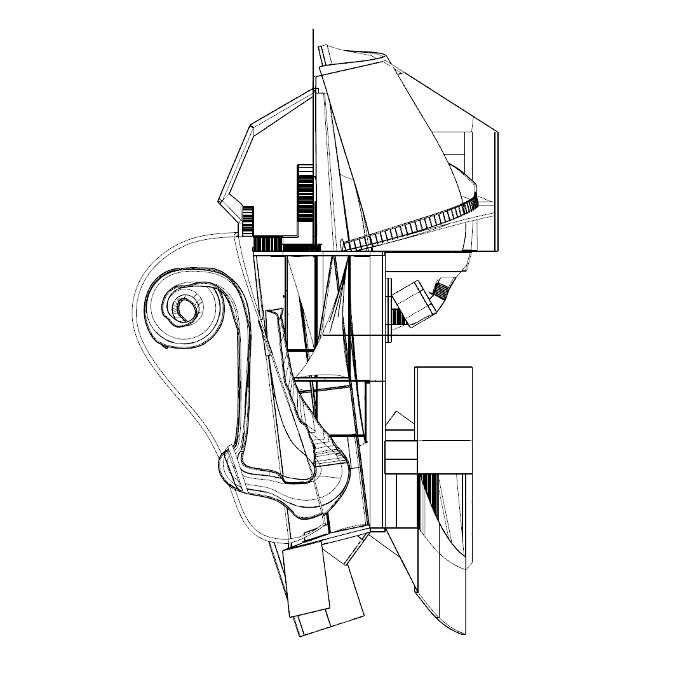
  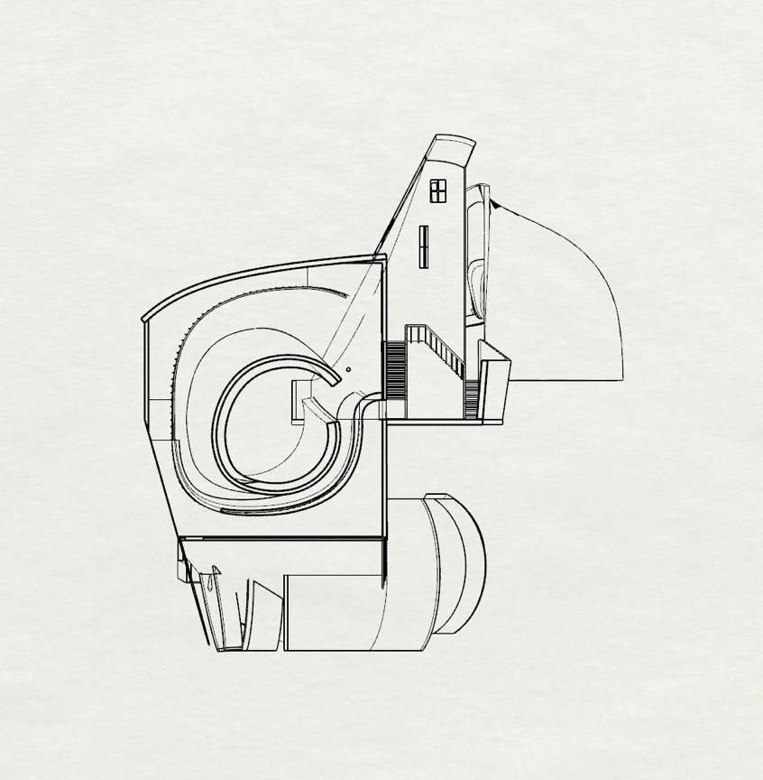
  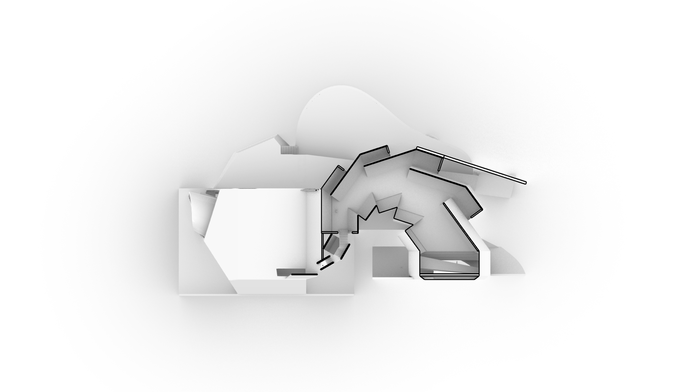
  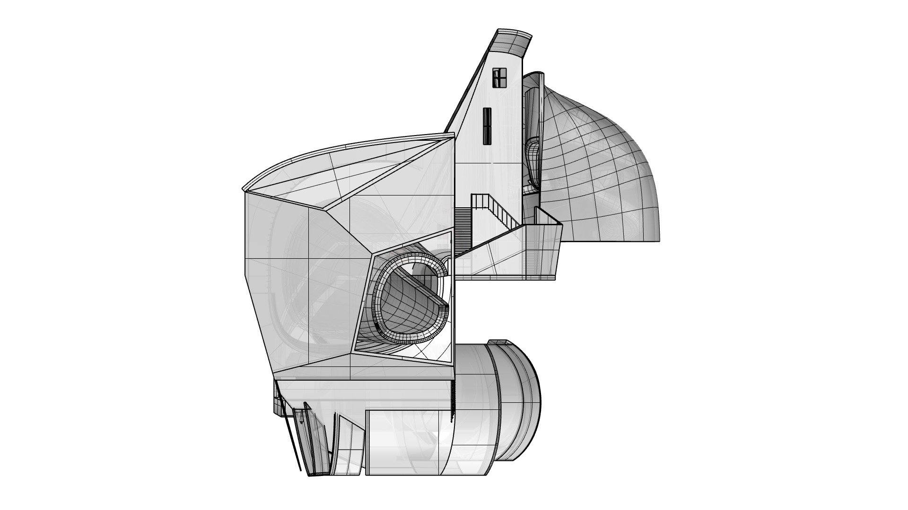
  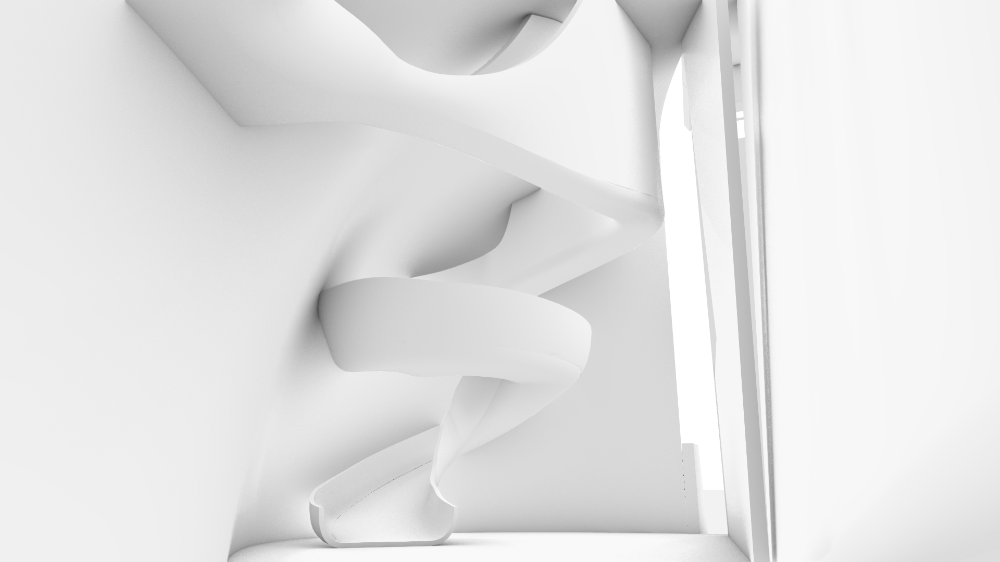
  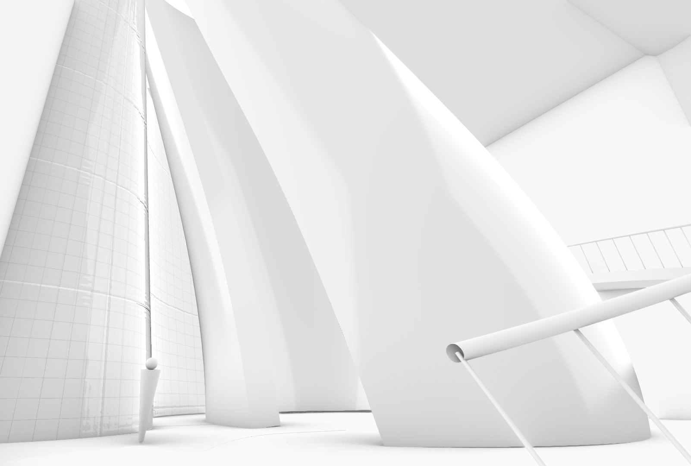
  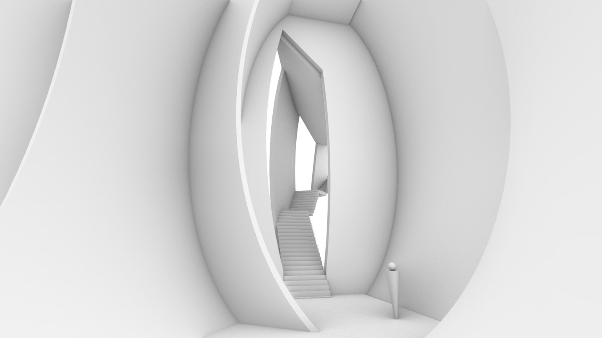
  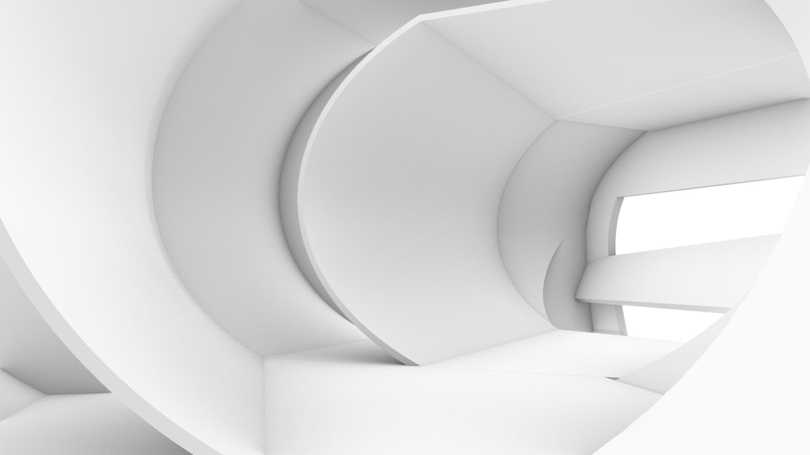
  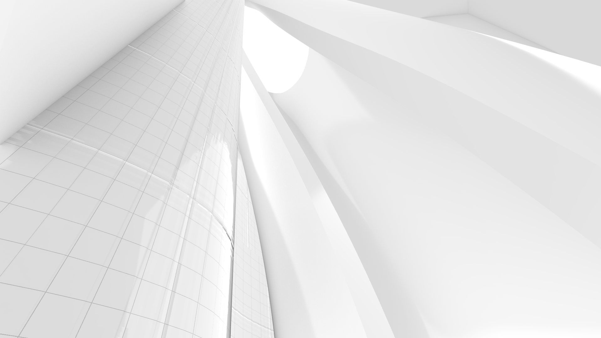
  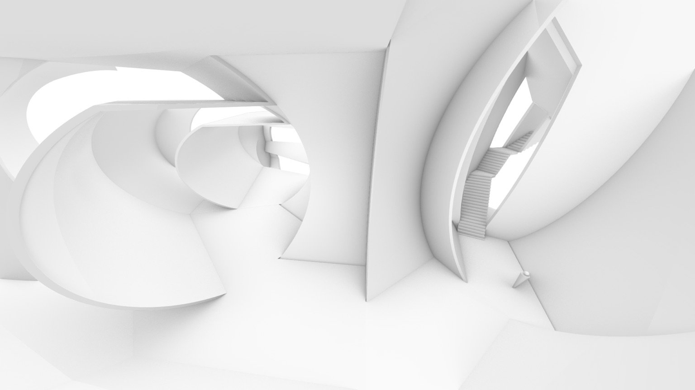
  <section>
    <h2>A NOTE FROM THE ARCHITECTS</h2><br>
    <p>
      Unlike the typical architectural project, EX NIHILO offered an opportunity to defy any normal restrictions that the
      material reality enforced and dive deep into the world of virtual design. Enclosed within the peculiar shell is a
      cyclical journey with no definitive end. First, choose one of the three points of entry; then choose a direction to
      follow. Either way your path will reveal the wonderful creations our artists have produced.<br><br>

      Each of the three spaces is designed to be reminiscent of a typical museum experience with distorted features that
      remind you of the details of a tangible gallery. Perhaps you might visit the washroom first and get flushed down to
      the ceramic center where paintings are tiled into the walls. Or maybe you will pass through the cloakroom: a forest
      of fabric surfaces that manipulate your view of the suspended figurative artwork. Alternatively, the reception
      obscures your sense of perspective and immerses you into an audio ambiance.<br><br>

      And then déjà vu. You return to the point of entry from which you started your journey.
    </p>
  </section>
  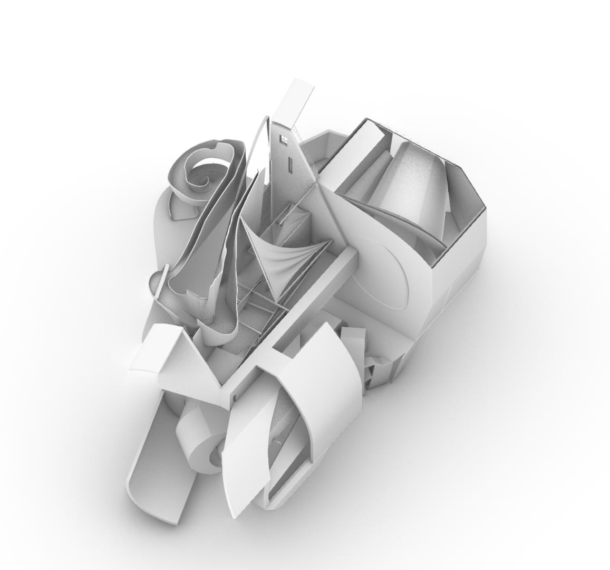
</div>
